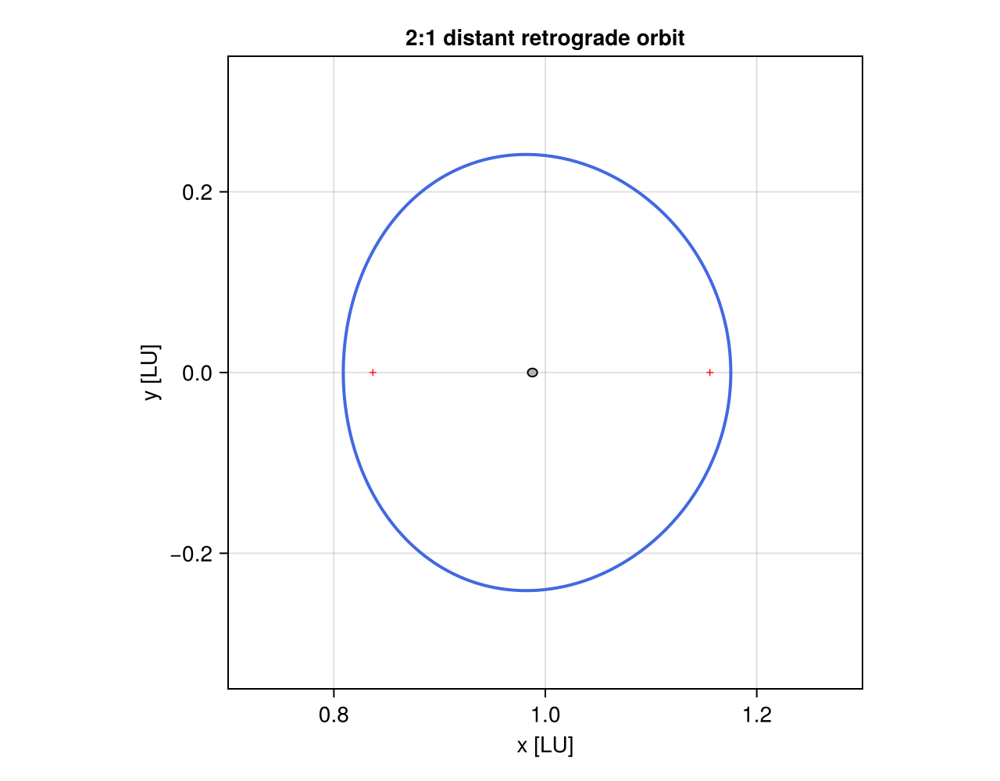

入门教程
本教程从一个地月 CR3BP 状态开始，依次介绍模型参数、轨迹积分、事件检测、坐标 转换、周期轨道生成和 Makie 可视化。除特别说明外，位置、速度和时间均使用本包的 无量纲地月旋转系单位。
1. 加载包与模型参数
using SEMDynamics
using DifferentialEquations
aux = Bcr4bp_Aux()
(
mass_ratio = aux.EMRot.μ,
length_unit_km = aux.dim.EMRot_l,
time_unit_s = aux.dim.EMRot_t,
velocity_unit_km_s = aux.dim.EMRot_v,
)(mass_ratio = 0.012150584394709708, length_unit_km = 384405.0, time_unit_s = 375197.58222794347, velocity_unit_km_s = 1.0245401841807786)aux.EMRot 保存地月旋转系的无量纲参数，aux.dim 保存恢复量纲所需的尺度。例如， 无量纲时间 t 对应 t * aux.dim.EMRot_t 秒。
2. 计算状态导数与 Jacobi 常数
平面 CR3BP 状态排列为 [x, y, vx, vy]，空间状态排列为 [x, y, z, vx, vy, vz]。cr3bp_eqm! 根据状态长度自动选择方程。
u0 = [0.82, 0.0, 0.0, 0.18]
du0 = similar(u0)
cr3bp_eqm!(du0, u0, aux, 0.0)
(derivative = du0, jacobi = compute_jacobi(u0, aux.EMRot.μ))(derivative = [0.0, 0.18, 0.18472850792358414, 0.0], jacobi = 3.1589878936119327)若需要太阳摄动，可将动力学函数换成 bcr4bp_eqm!；其状态约定相同，但方程显式 依赖时间。
3. 积分一条轨迹
高级接口 integration 负责建立 ODE、使用 Vern7 求解并返回等时间间隔样本：
parameters = ode_params(cr3bp_eqm!)
final_state, times, states = integration(
u0,
(0.0, 1.0),
parameters;
interp_num=101,
)
(final_state = final_state, samples = length(times))(final_state = [0.8720651337318593, 0.05693235182853691, 0.055896214566362436, -0.14058111672330068], samples = 101)需要访问完整 ODESolution、稠密插值或更多 DifferentialEquations 选项时，可以直接 构造问题：
problem = ODEProblem(cr3bp_eqm!, u0, (0.0, 1.0), aux)
solution = solve(problem, Vern7(); abstol=1e-12, reltol=1e-12)
solution(0.5)4-element Vector{Float64}:
0.8397299936894042
0.07156938866119136
0.06685000469612981
0.074929582645356114. 添加事件 callback
所有记录型 callback 共用 dynamic_events() 创建的容器。下面同时检测进入/逃逸月球 作用球、碰撞以及近月点/远月点：
events = dynamic_events()
callbacks = CallbackSet(
cb_enter(events; terminate=false),
cb_escape(events; terminate=false),
cb_p2collision(events; terminate=true),
cb_apse_p2(
events;
terminate_perilune=false,
terminate_apolune=false,
),
)
event_problem = ODEProblem(cr3bp_eqm!, u0, (0.0, 1.0), aux)
event_solution = solve(
event_problem,
Vern7();
callback=callbacks,
abstol=1e-12,
reltol=1e-12,
)
getproperty.(events, :code)1-element Vector{Symbol}:
:apolunecb_apse_p1 使用对称接口检测 :perigee 和 :apogee；cb_apse_p2 检测 :perilune 和 :apolune。terminate_* 控制是否终止积分，*_scale=(lower, upper) 用于按无量纲距离筛选事件。
5. 在旋转系与惯性系之间转换
以下示例把旋转状态转换到月心（第二主天体中心）惯性系，再执行逆变换：
μ = aux.EMRot.μ
t = 0.4
moon_inertial = cr3bp_rotating_to_inertial(μ, t, u0; center=:p2)
recovered = cr3bp_inertial_to_rotating(μ, t, moon_inertial; center=:p2)
(moon_inertial = moon_inertial, round_trip_error = maximum(abs, recovered - u0))(moon_inertial = [-0.15459954958021208, -0.06536364118248789, -0.004731660433069204, 0.01119142934030723], round_trip_error = 6.938893903907228e-18)两个转换函数均返回四元 SVector，适合在广播和大量重复计算中使用。
6. 生成 DRO 并绘图
generate_DRO、generate_halo 和 generate_nrho_9_2 都返回 PeriodicOrbit。 对象的 x0、P、C 和 sol 分别表示六维初值、完整周期、Jacobi 常数和一个 周期上的 ODE 解。
dro = generate_DRO(P=pi)
(x0 = dro.x0, period = dro.P, jacobi = dro.C)(x0 = [1.1754079216221924, 0.0, 0.0, 0.0, -0.4942602932486335, 0.0], period = 3.141592653589793, jacobi = 2.930520767969489)文档构建使用无界面的 CairoMakie 后端：
using CairoMakie
CairoMakie.activate!(type="png")
figure = Figure(size=(640, 500))
axis = Axis(
figure[1, 1];
title="2:1 distant retrograde orbit",
xlabel="x [LU]",
ylabel="y [LU]",
aspect=AxisAspect(1),
)
cr3bp_set_scn!(axis; lims=(0.7, 1.3, -0.35, 0.35))
plotPO!(axis, dro; color=:royalblue, linewidth=2)
figure
7. Halo 与 9:2 NRHO
Halo 分支由 branch=:northern/:southern 和 lp=:L1/:L2 选择：
l1_northern = generate_halo(branch=:northern, lp=:L1)
l2_southern = generate_halo(branch=:southern, lp=:L2)
northern_nrho = generate_nrho_9_2(branch=:northern)
southern_nrho = generate_nrho_9_2(branch=:southern)所有周期轨道 seed 均是完整六维状态 [x, y, z, vx, vy, vz]，内部统一修正 [x, z, vy] 并满足半周期条件 [y, vx, vz] = 0。指定其他周期时，生成器从参考 轨道执行周期延拓：
continued = generate_halo(
branch=:southern,
lp=:L2,
P=1.6,
continuation_step=0.005,
tol=1e-10,
)空间轨道使用 Axis3；cr3bp_set_scn! 会自动把地球和月球绘制为球体：
figure = Figure(size=(700, 600))
axis3 = Axis3(figure[1, 1]; xlabel="x", ylabel="y", zlabel="z")
cr3bp_set_scn!(axis3; lims=(0.8, 1.2, -0.2, 0.2, -0.2, 0.2))
plotPO!(axis3, northern_nrho; color=:mediumpurple, linewidth=2)
plotPO!(axis3, southern_nrho; color=:crimson, linewidth=2)仓库中的 examples/periodic_orbits.jl 给出了 DRO、L1/L2 Halo 与南北 9:2 NRHO 的完整多面板绘图示例。